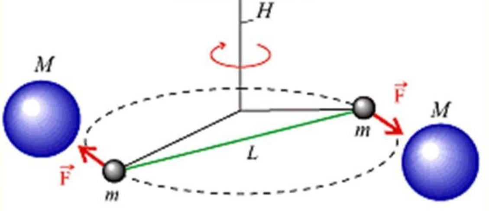

I закон Ньютона: существуют такие системы отсчёта, относительно которых свободное тело сохраняет свою скорость неизменной. Такие системы отсчёта называются инерциальными.
II закон Ньютона: ускорение, с которым движется тело под действием силы, прямо пропорционально этой силе и сонаправлено с ней.
\[\vec a = \frac{\vec F}{m}, \quad m\vec a = \sum\limits_{i=1}^n \vec F_i\]
Третий закон Ньютона: два тела взаимодействуют с силами одной природы, направленными вдоль прямой, соединяющей тела, равными по модулю и противоположными по направлению.
Закон всемирного тяготения: все тела притягиваются друг к другу с силами, прямо пропорциональными их массам и обратно пропорциональными квадрату расстояния между ними.
II закон Ньютона в импульсной форме: в инерциальной системе отсчёта скорость изменения импульса материальной точки равна действующей силе.
\[\vec{F} = \frac{d\vec{p}}{dt} = \lim_{\Delta t \to 0}\frac{\Delta \vec{p}}{\Delta t}\]
Импульс действующей на материальную точку силы равен изменению импульса материальной точки: \(\vec{I} = \vec{F}\Delta t = \Delta\vec{p}\).
Закон сохранения импульса: если сумма внешних сил, действующих на систему, равна нулю, то импульс системы сохраняется; или импульс замкнутой системы тел не изменяется при любых взаимодействиях внутри системы.
Когда промежуток времени очень мал (удары, взрывы и т.д.)
Можно использовать в проекции на одну из осей координат
Теорема о движении центра масс: центр масс твёрдого тела движется так же, как двигалась бы материальная точка, масса которой равна массе тела, под действием внешних сил, приложенных к данному телу.
Следствие: если сумма внешних сил равна нулю, то центр масс покоится или движется равномерно и прямолинейно: \(\frac{\Delta{\vec{v_c}}}{\Delta t} = \vec{0}\) и \(\vec{v_c} = \text{const}\).
Теорема о кинетической энергии: изменение кинетической энергии равно сумме работ всех сил, совершённых за время, в течение которого менялась кинетическая энергия системы.
Теорема о потенциальной энергии: работа, совершаемая консервативными силами, равна изменению потенциальной энергии тела, взятому с противоположным знаком.
\[A = W_{p_1} - W_{p_2} = -\Delta W_p\]
Для силы тяжести: \(A = mg(h_1 - h_2)\).
Часть I: Механика
1. Введение в механику
Механика — наука об общих закономерностях движения тел.
Механическое движение — перемещение тел в пространстве относительно других тел с течением времени.
Описать движение тела — значит определить его положение на прямой движения в любой момент времени.
Механика делится на три раздела:
Кинематика — описывает движение тела, не объясняя почему движение происходит.
Статика — отвечает на вопрос почему тело покоится.
Динамика — отвечает на вопрос почему тело приходит в движение.
Механическое движение бывает 3 видов:
Поступательное — механическое движение системы точек, при котором отрезок, соединяющий любые две точки в теле, остаётся параллельным своему первоначальному положению, если тело не деформируется.
Вращательное
Колебательное
2.1 Введение в кинематику
Кинематика — раздел механики, изучающий способы описания движений и связь между величинами, характеризующими эти движения.
Материальная точка — модель тела, размерами которого в данных условиях движение можно пренебречь.
Замечание: не существует способа указать положение тела в пустом пространстве, где нет других тел.
Система отсчёта — система координат, тело отсчёта и прибор для измерения времени.
Тело отсчёта — тело, которое мы принимаем за неподвижное, относительно которого рассматривается движение других тел.
2.2 Координаты
Система координат — способ определения положения точки или тела с помощью чисел и других символов.
Координаты точки на прямой — число, модуль которого равен расстоянию до начала отсчёта, а знак указывает, с какой стороны от начала отсчёта находится данная точка.
Координата — расстояние от начала отсчёта, взятое с определённым знаком.
Координатные линии — окружности с центром в полюсе и лучи, выходящие из полюса.
Декартовая система координат — способ определения положения точки или тела на плоскости с помощью двух чисел: абсциссы \(x\) и ординаты \(y\). Основана на двух взаимно перпендикулярных координатных осях, пересекающихся в начале отсчёта.
Полярная система координат — это способ задания положения точки на плоскости при помощи радиус-вектора \(r\) и угла \(\rho\):
Физическая величина — физическое свойство материального объекта, физического явления или процесса, которое может быть охарактеризовано количественно.
Скаляр — величина, каждое значение которой может быть выражено одним числом.
Вектор — направленный отрезок прямой.
Проекцией вектора \(\vec{AB}\) на ось OX является число, равное величине отрезка \(A_1B_1\), где \(A_1\) и \(B_1\) — это проекции точек \(A\) и \(B\) на ось OX.
Радиус-вектор — вектор, начало которого совпадает с началом системы координат, а конец — с данной точкой.
Радиус-вектор характеризует положение тела в пространстве.
Перемещение — вектор, соединяющий начальное положение тела с его последним положением.
Перемещение характеризует движение тела.
Траектория — линия, вдоль которой происходило движение тела.
Путь — скалярная физическая величина, численно равная длине траектории.
Способы задания движения:
Координатный способ: положение точки в пространстве определяется тремя координатами, изменение которых определяет закон движения точки.
Векторный способ: положение точки определяется её радиус-вектором. Годограф — кривая, которую описывает конец какого-либо вектора.
Естественный способ: называется траектория точки, закон её движения по этой траектории, начало и направление отсчёта дуговой координаты.
2.4 Равномерное движение
Равномерное прямолинейное движение — движение, при котором траектория есть прямая линия и точка за любые равные промежутки времени проходит равные расстояния.
Скорость равномерного движения — векторная физическая величина, равная отношению изменения координаты тела (точки) \(\Delta x\) к промежутку времени \(\Delta t\), за который это изменение произошло.
Скорость показывает, как быстро движется тело, то есть как быстро с течением времени меняется его положение в пространстве по отношению к другим телам.
Проекция скорости при равномерном движении на ось \(x\) равна отношению изменения координаты ко времени, за которое это изменение произошло.
Координата тела (точки) в момент времени t равна сумме начальной координаты тела и произведения проекции скорости тела на ось \(x\) на время, в течение которого происходило движение.
О графике зависимости проекции скорости на ось OX от времени:
Если проекция скорости больше 0 — это означает, что тело двигается по направлению оси \(x\).
Если проекция скорости меньше 0 — это означает, что тело двигается против направления оси \(x\).
Площадь под графиком скорости, без учёта знака, — путь; а с учётом знака — перемещение.
Средняя скорость — векторная физическая величина, равная отношению вектора перемещения к промежутку времени, за которое это перемещение произошло.
Средняя скорость характеризует быстроту, с которой совершалось перемещение в среднем.
Средняя путевая скорость — скалярная физическая величина, равная отношению всего пути ко всему времени движения.
Средняя путевая скорость показывает какой путь проходило тело за единицу времени в среднем.
Неравномерное движение — движение, при котором скорость тела изменяется как по направлению, так и по величине.
2.5 Равноускоренное движение
Равноускоренное движение — механическое движение, при котором тело движется по прямой линии и за любые равные промежутки времени скорость тела изменяется на одинаковую величину.
Мгновенная скорость — векторная физическая величина, равная пределу отношения перемещения материальной точки к промежутку времени, за которое оно совершено, при стремлении этого промежутка к нулю.
Мгновенная скорость в каждой точке траектории направлена по касательной к траектории.
Скорость характеризует скорость изменения радиус-вектора, то есть показывает как он изменялся за единицу времени.
Среднее ускорение — векторная физическая величина, равная отношению изменения скорости к промежутку времени, за которое изменение произошло.
Мгновенное ускорение — векторная физическая величина, равная пределу отношения изменения вектора скорости к промежутку времени, за которое изменение произошло, при стремлении этого промежутка к нулю.
Мгновенное ускорение показывает быстроту изменения скорости.
Равноускоренное прямолинейное движение — прямолинейное движение с постоянным ускорением.
Основная задача кинематики: по известной зависимости ускорения от времени, координаты и скорости найти закон движения тела.
Закон движения тела при равноускоренном прямолинейном движении:
\[x(t) = x_0 + v_{0x}t + \frac{a_x t^2}{2}\]
Здесь \(x\) — текущее положение тела, \(x_0\) — начальное положение, \(v_{0x}\) — проекция начальной скорости на ось \(x\), \(a_x\) — проекция ускорения на ось \(x\), а \(t\) — время.
Координата тела (точки) в момент времени t при прямолинейном равноускоренном движении равна сумме начальной координаты тела, произведения проекции начальной скорости на ось \(x\) и времени и половины произведения проекции ускорения на ось \(x\) и квадрата времени.
Уравнение проекции перемещения на ось \(x\):
\[S_x = \frac{v_x^2 - v_{0x}^2}{2a_x}\]
Проекция перемещения на ось \(x\) равна отношению разности квадратов проекций скорости в данный момент и начальной скорости на ось \(x\) к удвоенной проекции ускорения на ось \(x\).
Свободное падение — движение тела под действием силы тяжести при отсутствии силы сопротивления воздуха и действия других тел, кроме Земли.
🔬 Опыт Галилея
Наблюдения:
Галилей обнаружил, что шары одинакового диаметра, изготовленные из дерева, золота, слоновой кости, движутся по желобу с одинаковыми ускорениями \(a=\frac{2s}{t^2}\). Итак, ускорения не зависят от массы шаров.
Вывод:
Галилей доказал, что в отсутствие сопротивления воздуха время падения не зависит от массы тела — тела разных масс падают с одинаковым ускорением.
🔬 Опыт Ньютона
Ход эксперимента:
В стеклянную трубку помещают предметы разной массы и формы: дробинки, кусочки пробки, пушинки и т.д.
Если теперь трубку перевернуть, дробинка падает быстрее, за ней кусочки пробки, а пушинка — последней.
Но если выкачать воздух из трубки и создать вакуум, оба предмета опускаются на дно одновременно.
Наблюдения:
Движение пушинки задерживалось сопротивлением воздуха, которое в меньшей степени сказывалось на движении, например, пробки.
Когда же на эти тела действует только притяжение Земли, то все они падают с одинаковым ускорением.
Вывод:
Земля сообщает всем без исключения телам одно и то же ускорение. Если сопротивление воздуха отсутствует, то вблизи поверхности Земли ускорение падающего тела постоянно.
2.7 Кинематика тела, брошенного под углом к горизонту
Распишем формулы проекций скорости и уравнения координат:
\[\begin{align*}
&Ox: \quad x = v_0\cos\alpha \cdot t \\
&Oy: \quad y = h + v_0\sin\alpha \cdot t - \frac{gt^2}{2} \\
&Ox: \quad v_x = v_0\cos\alpha \\
&Oy: \quad v_y = v_0\sin\alpha - gt
\end{align*}\]
Найдём уравнение траектории тела. Для этого из первого уравнения выразим время, а затем подставим его во второе:
\[\begin{align*}
t &= \frac{x}{v_0\cos\alpha} \\
y &= h + v_0\sin\alpha \cdot \frac{x}{v_0\cos\alpha} - \frac{g}{2}\left(\frac{x}{v_0\cos\alpha}\right)^2 \\
&= h + x\tan\alpha - \frac{g}{2v_0^2\cos^2\alpha}x^2
\end{align*}\]
Время подъёма и время падения тела
В наивысшей точке вектор скорости \(\vec{v}\) параллелен оси \(X\) и перпендикулярен оси \(Y\). Следовательно, проекция скорости \(\vec{v}\) на ось \(Y\) равна нулю (\(v_y=0\)), найдём время подъёма \(\tau_1\):
Тангенциальное ускорение — векторная физическая величина, составляющая ускорение, равная пределу отношения тангенциальной составляющей изменения вектора скорости к промежутку времени, за которое это изменение произошло, при стремлении этого промежутка к нулю.
Тангенциальное ускорение характеризует быстроту изменения модуля скорости.
Разложение \(\Delta\vec{v}\) на тангенциальную и нормальную составляющие
Если \(\vec{a}_\tau \uparrow\uparrow \vec{v}\), то тело ускоряется.
Если \(\vec{a}_\tau \uparrow\downarrow \vec{v}\), то тело замедляется.
Нормальное ускорение — векторная физическая величина, составляющая вектор ускорения, равная пределу отношения нормальной составляющей изменения вектора скорости к промежутку времени, за которое это изменение произошло, при стремлении этого промежутка к нулю.
Нормальное ускорение характеризует быстроту изменения направления скорости.
Чтобы выяснить смысл нормального ускорения, будем рассматривать движение, при котором не меняется модуль скорости, то есть траекторией будет окружность:
\[\begin{align*}
&\text{Проведём хорду } PQ. \\
&\vec{v_0} \perp OP \\
&\vec{v}(t) \perp OQ \\
&\text{Проведём вектор } \Delta\vec{v}. \\
&\text{Рассмотрим треугольник } POQ \text{ и } PZX: \\
&\angle ZPX = \angle POQ \text{ по лемме об остром угле при взаимно перпендикулярных сторонах} \\
&\frac{PZ}{OP} = \frac{PX}{OQ} \text{ из равнобедренности этих треугольников}. \\
&\text{Значит, } \triangle POQ \sim \triangle PZX. \\
&v = |\vec{v_0}| = |\vec{v}(t)| \Rightarrow \vec{a} = \vec{a}_n \Rightarrow \Delta\vec{v} = \Delta\vec{v_n} \\
&\frac{|\Delta\vec{v}|}{PQ} = \frac{v}{R} \\
&|\Delta\vec{v}| = \frac{v}{R}PQ \\
&|\vec{a_n}| = \lim_{\Delta t \to 0}\frac{|\Delta\vec{v_n}|}{\Delta t} = \lim_{\Delta t \to 0}\frac{|\Delta\vec{v}|}{\Delta t} = \lim_{\Delta t \to 0}\frac{v}{R}\frac{PQ}{\Delta t} = \frac{v}{R}\lim_{\Delta t \to 0}\frac{PQ}{\Delta t} \\
&\text{Тогда при } \Delta t \to 0 \text{ хорда } PQ \to \text{ дуга } PQ \\
&|\vec{a_n}| = \frac{v}{R}\lim_{\Delta t \to 0}\frac{PQ}{\Delta t} = \frac{v}{R}v = \frac{v^2}{R} \\
&|\vec{a_n}| = \frac{v^2}{R} \\
&\beta = \frac{180^\circ - \Delta\theta}{2} \Rightarrow \lim_{\Delta t \to 0}\beta = \lim_{\Delta t \to 0}\frac{180^\circ - \Delta\theta}{2} = 90^\circ
\end{align*}\]
2.9 Кинематика движения тела по окружности
Вступление
Абсолютно твёрдое тело — идеальная модель тела, деформацией в котором, под действием внешних сил, можно пренебречь.
В абсолютно твёрдом теле расстояние между двумя точками не меняется.
При вращательном движении абсолютно твёрдого тела все его точки движутся по окружности, центры которых лежат на одной прямой, которая называется осью вращения.
Ось вращения проходит перпендикулярно плоскости рисунка.
Угол поворота тела — вектор, модуль которого равен углу, на который повернулось тело, а направление определяется правилом правого винта.
Правило правого винта: Если правый винт вращать по направлению вращения тела, то поступательное движение винта укажет направление вектора угла поворота.
Радианная мера угла — отношение длины дуги окружности к радиусу этой окружности.
\[\varphi = \frac{s}{r}\]
1 радиан — угол, соответствующий дуге, длина которой равна радиусу окружности, которой принадлежит эта дуга.
Средняя угловая скорость — вектор, равный отношению угла поворота к промежутку времени, за который совершился этот поворот.
Угловая скорость и угол поворота — сонаправленные вектора.
Мгновенная угловая скорость — векторная физическая величина, равная пределу отношения угла поворота к промежутку времени, за который совершился этот поворот, при условии, что этот промежуток стремится к нулю.
\[\vec{\omega} = \lim_{\Delta t \to 0}\frac{\vec{\Delta\varphi}}{\Delta t}\]
Мгновенное угловое ускорение — векторная физическая величина, равная пределу отношения изменения угловой скорости к промежутку времени, за который это изменение произошло, при условии, что этот промежуток стремится к нулю.
\[\vec{\beta} = \lim_{\Delta t \to 0}\frac{\vec{\Delta\omega}}{\Delta t}\]
При равноускоренном вращении угловая скорость увеличивается, угловая скорость и угловое ускорение сонаправлены.
При равнозамедленном вращении угловая скорость по модулю уменьшается, угловая скорость и угловое ускорение противонаправленны.
Если угловое ускорение — постоянная величина (по модулю и направлению), то движение называют равноускоренным вращением.
Если угловая скорость — постоянная величина (по модулю и направлению), то движение называют равномерным вращением.
Равномерное движение тела по окружности
Равномерное вращение точки — движение точки по окружности с постоянной линейной скоростью.
Период — скалярная физическая величина, равная отношению промежутка времени вращения к числу оборотов, совершённых за этот промежуток, при равномерном вращении.
\[T = \frac{t}{N}\]
\[[T] = [\text{с}]\]
Период вращения — время одного полного оборота.
Частота вращения — скалярная физическая величина, равная отношению числа оборотов к промежутку времени, за который совершались обороты, при равномерном вращении.
Частота вращения равняется числу оборотов в единицу времени при равномерном движении.
Векторное произведение вектора \(\vec{a}\) на вектор \(\vec{b}\) — вектор, модуль которого равен произведению модулей \(|\vec{a}|\) и \(|\vec{b}|\) на синус угла между ними, а направление которого перпендикулярно обоим исходным векторам и определяется правилом правого винта.
Правило правого винта: Если вращать правый винт от первого вектора ко второму по наименьшему углу, то поступательное движение винта укажет результат векторного произведения этих векторов.
2.10 Относительность движения. Классическое преобразование Галилея.
Под относительностью движения понимается, что все кинематические характеристики зависят от выбора системы отсчёта.
Пусть есть первая неподвижная система отсчёта и вторая, которая подвижна относительно первой. Считаем, что в начальный момент времени тела отсчёта первой и второй систем совпадают. Вторая движется относительно первой со скоростью \(\vec{u}\).
Пусть есть точка \(A\): в первой системе её положение описывается радиус-вектором \(\vec{r_0}\), а относительно второй системы радиус-вектором \(\vec{r_{0'}}\).
\[\begin{cases}
x = x' + u_xt \\
y = y' + u_yt \\
z = z' + u_zt \\
t = t'
\end{cases}\]
*В рамках классической механики предполагается, что время во всех системах отсчёта протекает одинаково.
Абсолютная, относительная и переносная скорости
Пусть точка движется произвольно.
Проведём начальный радиус-вектор в каждой системе отсчёта и получим, что вектор перемещения точки в неподвижной системе равен геометрической сумме вектора перемещения точки в подвижной системе и вектора перемещения подвижной системы отсчёта относительно неподвижной:
\[\Delta\vec{r}_{\text{абсолютное}} = \Delta\vec{r}_{\text{относительное}} + \Delta\vec{r}_{\text{переносное}}\]
где \(\Delta\vec{r}_{\text{абс}}\) -- вектор перемещения точки в неподвижной системе отсчёта; \(\Delta\vec{r}_{\text{отн}}\) -- вектор перемещения точки в подвижной системе отсчёта; \(\Delta\vec{r}_{\text{пер}}\) -- вектор перемещения подвижной системы отсчёта относительно неподвижной системы отсчёта.
Теперь поделим всё на промежуток времени, в течение которого происходило перемещение, устремим этот промежуток к нулю и получим, что абсолютная скорость точки равна геометрической сумме относительной скорости точки и переносной скорости точки:
\[\begin{align*}
&\frac{\Delta\vec{r}_{\text{абс}}}{\Delta t} = \frac{\Delta\vec{r}_{\text{отн}}}{\Delta t} + \frac{\Delta\vec{r}_{\text{пер}}}{\Delta t} \\
&\lim_{\Delta t \to 0}\frac{\Delta\vec{r}_{\text{абс}}}{\Delta t} = \lim_{\Delta t \to 0}\frac{\Delta\vec{r}_{\text{отн}}}{\Delta t} + \lim_{\Delta t \to 0}\frac{\Delta\vec{r}_{\text{пер}}}{\Delta t}
\end{align*}\]
\[\vec{v}_{\text{абсолютная}} = \vec{v}_{\text{относительная}} + \vec{v}_{\text{переносная}}\]
где \(\vec{v}_{\text{абс}}\) — скорость точки в неподвижной системе отсчёта; \(\vec{v}_{\text{отн}}\) — скорость точки в подвижной системе отсчёта; \(\vec{v}_{\text{пер}}\) — скорость подвижной системы отсчёта относительно неподвижной системы отсчёта.
Теперь выразим ускорение абсолютное через геометрическую сумму ускорения относительного и ускорения переносного:
\[\vec{a}_{\text{абсолютное}} = \vec{a}_{\text{относительное}} + \vec{a}_{\text{переносное}}\]
где \(\vec{a}_{\text{абс}}\) — ускорение точки в неподвижной системе отсчёта; \(\vec{a}_{\text{отн}}\) — ускорение точки в подвижной системе отсчёта; \(\vec{a}_{\text{пер}}\) — ускорение подвижной системы отсчёта относительно неподвижной системы отсчёта.
*Верно только для поступательного движения.
3.1 Законы Ньютона
I закон Ньютона: существуют такие системы отсчёта, относительно которых свободное тело сохраняет свою скорость неизменной. Такие системы отсчёта называются инерциальными.
Свободное тело — тело, на которое не действуют другие тела или действия других тел скомпенсированы.
Инерциальная система отсчёта — система отсчёта, относительно которой свободное тело движется с постоянной скоростью.
Маятник Фуко — массивный шар, подвешенный на достаточно длинной нити и совершающий малые колебания относительно положения равновесия. Если бы система отсчёта была инерциальной, то плоскость колебаний маятника Фуко оставалась бы неизменной относительно Земли.
Основное утверждение динамики (II закон Ньютона): изменение скорости или деформация тела происходит в результате воздействия на данное тело других тел.
Сила — векторная физическая величина, являющаяся мерой воздействия на данное тело других тел, при котором тело изменяет свою скорость или деформируется.
Результат воздействия силы на тело:
Динамический: движения тела, изменение скорости.
Статический: деформация тела, изменение формы.
Инерция — общее свойство всех физических объектов, тел сохранять своё состояние.
Изменений состояний много \(\Rightarrow\) много мер инертности.
Под инерцией в механике понимается способность тела сохранять свою скорость постоянной.
Масса — мера инертности тела.
*При поступательном движении.
II закон Ньютона: ускорение, с которым движется тело под действием силы, прямо пропорционально этой силе и сонаправлено с ней.
\[\vec{a} = \frac{\vec{F}}{m}\]
Принцип суперпозиции: если одновременно действуют несколько сил, то каждая из них сообщает точке ускорение, определённое вторым законом Ньютона, как если бы других сил не было.
Действие нескольких сил можно заменить действием равнодействующей силы.
Третий закон Ньютона: два тела взаимодействуют с силами одной природы, направленными вдоль прямой, соединяющей тела, равными по модулю и противоположными по направлению.
Границы применимости II закона Ньютона:
Материальная точка.
Тела движутся со скоростями, значительно меньшими скорости света.
3.2 Сила трения
Трение — один из видов взаимодействия тел. Возникает при соприкосновении двух тел. Подчиняется третьему закону Ньютона.
Силы трения имеют электромагнитную природу. Возникают вследствие взаимодействия между атомами и молекулами соприкасающихся тел или наличия неровностей и шероховатостей.
Виды сил сухого трения:
Трение покоя
Трение скольжения
Трение качения
Сила трения покоя
Сила трения покоя — сила, возникающая при относительном покое тел между поверхностями соприкасающихся тел и препятствующая началу движения.
Величина: зависит от условия покоя тела. Направление: противоположно предполагаемому направлению движения. Точка приложения: к поверхности тела.
Максимальная сила трения покоя — максимальное значение силы трения покоя, при котором скольжение ещё не наступает.
Будем считать, что максимальное значение модуля силы трения покоя прямо пропорционально модулю силы реакции опоры.
\[F_{\text{тр.покоя}} = \mu N\]
где \(\mu\) — коэффициент пропорциональности, называемый коэффициентом трения покоя. Зависит от поверхностей соприкасающихся тел.
Сила трения скольжения
Сила трения скольжения — сила, возникающая между поверхностями соприкасающихся тел и препятствующая относительному поступательному движению тел.
Направление: противоположно направлению скольжения. Точка приложения: к поверхности тела.
Закон Кулона-Амонтона: сила сухого трения скольжения пропорциональна силе нормального давления тела на опору.
Качества обработки поверхностей соприкасающихся тел.
Величины прижимающей силы.
Не зависит от:
Площади соприкасающихся поверхностей.
Сила трения качения
Сила трения качения — сила, возникающая между поверхностями соприкасающихся тел и препятствующая относительному вращательному движению тел.
Сила трения качения возникает при вращении твёрдого тела по твёрдой упругой поверхности. Упругая опора продавливается твёрдым телом, возникает наплыв и твёрдому телу приходится его преодолевать.
Между двумя абсолютно твёрдыми телами сила трения качения отсутствует.
\[F_{\text{тр.качения}} = \frac{k}{R}N\]
где \(N\) — сила нормальной реакции опоры, \(R\) — радиус катящегося тела, \(k\) — коэффициент трения качения, имеющий размерность длины.
Сила трения качения, как правило, во много раз меньше силы трения скольжения. Поэтому был создан подшипник, который позволяет перевести трение скольжения на трение качения.
Силы вязкого трения
Вязкое трение возникает в жидкости при наличии достаточной прослойки жидкости между телами.
При небольших скоростях мы считаем, что сила вязкого трения прямо пропорциональна скорости:
\[\vec{F}_{\text{тр.вязкое}} = -\beta_1\vec{v}\]
При больших скоростях мы считаем, что сила вязкого трения прямо пропорциональна квадрату скорости:
\[F_{\text{тр.вязкое}} = \beta_2 v^2\]
Вязкое трение зависит от формы поверхности.
Парашют — устройство, предназначенное для уменьшения скорости движения тела за счёт особенной формы, увеличивающей вязкое трение.
В процессе такого падения тела его скорость увеличивается, ускорение уменьшается и в конце концов достигает нуля. Любое движение при ускорении, равном нулю, называется установившимся движением.
\[\begin{align*}
&mg = F_{\text{Арх}} + F_{\text{сопр}} \\
&g\rho_1V = g\rho_2V + 6\pi r \eta v \\
&v = \frac{gV(\rho_1 - \rho_2)}{6\pi r \eta} = \frac{2g(\rho_1 - \rho_2)r^2}{9\eta}
\end{align*}\]
3.3 Сила упругости
Основная задача механики: определить положение тела, его скорость и ускорение в любой момент времени.
Обратная задача динамики: по известному закону движения тела найти силы, действующие на тело.
Деформация — изменение формы или размеров тела.
Причина деформации — смещение частиц тела на разные расстояния под действием внешних сил.
Деформации бывают двух видов:
Упругая — деформация, исчезающая после прекращения действия на тело внешних сил. Тело принимает первоначальные размеры и форму.
Пластическая — деформация, не исчезающая после прекращения действия на тело внешних сил. Тело не принимает первоначальные размеры и форму.
Упругие тела — тела, которые полностью восстанавливают свою форму и объём после прекращения действия сил, вызвавших деформацию.
Пластические тела — тела, которые не восстанавливают свою форму и объём после прекращения действия сил, вызвавших деформацию.
Сила упругости — сила, возникающая в упругом деформированном теле и стремящаяся вернуть телу исходную форму.
Природа: электромагнитная.
Причина возникновения: взаимодействие частиц тела друг с другом.
🔬 Эксперимент Гука
Ход эксперимента:
Возьмём тело длиной \(l_0\).
Будем подвешивать к нему грузы.
Замерим удлинение тела.
Наблюдения:
Сила упругости прямо пропорциональна удлинению тела.
Закон Гука: величина деформации прямо пропорциональна приложенной силе.
\[F = k|\Delta l|\]
где \(k\) — коэффициент жёсткости (зависит от материала, размеров и формы тела), \(\Delta l\) — удлинение тела.
Закон Гука выполняется только для упругих деформаций.
Причина возникновения: деформации тела.
Причина деформации: внешнее воздействие на тело.
Виды сил упругости
Сила натяжения нити — сила упругости, действующая на тело со стороны нити.
Обозначение: \(T\).
Величина: из условий движения или равновесия тела.
Точка приложения: к телу в точке подвеса.
Направление: вдоль нити.
Сила нормальной реакции опоры — сила упругости, действующая на тело со стороны опоры.
Обозначение: \(N\).
Величина: из условий движения или равновесия тела.
Точка приложения: к телу в точке соприкосновения с опорой.
Направление: перпендикулярно поверхности соприкосновения.
Вес тела — сила упругости, с которой тело действует на опору или подвес.
Обозначение: \(P\).
Величина: из условий движения или равновесия тела.
Точка приложения: к опоре или подвесу.
Направление: противоположно силе нормальной реакции опоры или силе натяжения нити.
Обобщённый закон Гука
Перегрузка — явление увеличения веса тела.
Возникает при ускоренном движении вверх или вниз.
Невесомость — явление исчезновения веса, то есть тело перестаёт действовать на опору или подвес.
Абсолютное удлинение — разность длин после растяжения (сжатия) и до него.
Относительное удлинение — отношение абсолютного удлинения к изначальной длине.
Абсолютное удлинение показывает насколько удлинилось тело.
Относительное удлинение показывает какую часть от длины составляет удлинение.
Механическое напряжение — отношение модуля силы упругости к площади поперечного сечения образца, перпендикулярного вектору силы.
\[\tau = \frac{F_{\text{упр}}}{S}\]
Касательное напряжение — отношение модуля силы упругости к площади сечения касательно к вектору силы.
Обобщённый закон Гука — при малых деформациях механическое напряжение прямо пропорционально деформации.
\[\sigma = E\varepsilon\]
где \(E\) — модуль Юнга — физическая величина, которая характеризует способность материала сопротивляться растяжению, сжатию при упругой деформации, \([E] = [\text{Па}]\), \(\sigma\) — механическое напряжение, \([\sigma] = [\text{Па}]\), \(\varepsilon\) — относительное удлинение.
Связь между законом Гука и обобщённым законом Гука:
где \(k\) — коэффициент жёсткости, \(E\) — модуль Юнга, \(S\) — площадь поперечного сечения, \(l_0\) — начальная длина тела.
Диаграмма растяжения
Диаграмма растяжения — график зависимости механического напряжения от относительного удлинения.
Предел пропорциональности \(\sigma_{\text{пц}}\) — механическое напряжение, до значения которого выполняется закон Гука.
Предел упругости \(\sigma_{\text{упр}}\) — механическое напряжение, при котором ещё не возникает заметная остаточная деформация.
Остаточная деформация \(\varepsilon_{\text{ост}}\) — деформация, которая остаётся после прекращения воздействия.
Предел текучести \(\sigma_{\text{т}}\) — механическое напряжение, при котором деформации растут без увеличения механического напряжения.
Предел прочности \(\sigma_{\text{н}}\) — максимальное механическое напряжение, которое может выдержать материал.
Диаграмма растяжения материала
Пластичные материалы — материалы, способные получать большие остаточные деформации без разрушения.
Пластичные материалы: пластилин, сталь и др.
Хрупкие материалы — материалы без области текучести.
Хрупкие материалы: хрусталь, керамика и др.
Запас прочности — отношение предела прочности данного материала к максимальному напряжению, которое будет испытывать деталь в работе.
Коэффициент безопасности — отношение предела пропорциональности данного материала к максимальному напряжению, которое будет испытывать деталь в работе.
3.4 Закон всемирного тяготения. Гравитационное поле
I закон Кеплера: все планеты движутся по эллипсам, в одном из фокусов которого находится Солнце.
Все космические тела движутся по траекториям, являющимися коническими сечениями (эллипс, парабола, окружность, прямая).
II закон Кеплера: радиус-вектор планеты за равные промежутки времени "заметает" равные площади.
III закон Кеплера: квадраты периодов обращения планет вокруг Солнца относятся как кубы больших полуосей их орбит.
Закон всемирного тяготения: все тела притягиваются друг к другу с силами, прямо пропорциональными их массам и обратно пропорциональными квадрату расстояния между ними.
Гравитационная постоянная — физическая постоянная, показывающая с какой силой притягиваются два тела массой 1 кг каждое, находящиеся на расстоянии 1 м друг от друга.
Гравитационная постоянная одинакова для всех тел во Вселенной.
Границы применимости закона всемирного тяготения:
Размеры тел пренебрежимо малы по сравнению с расстоянием между ними.
Оба тела однородны и шарообразны.
Одно из тел — шар, размеры и масса которого значительно больше, чем у других тел.
🔬 Опыт Кавендиша
Цель:
Измерить гравитационную постоянную.
Оборудование:
Тонкая нить.
Двухметровый стержень.
Крутильные весы.
Свинцовые шары (диаметр 5см; масса 775г)
Свинцовые шары (диаметр 20см; масса 49.5кг)
Ход эксперимента:
Прибор состоит из крутильных весов, изготовленных из деревянного стержня длиной 1.8м, подвешенного на проволоке, с двумя свинцовыми шарами на концах. Два массивных свинцовых шара подвешены отдельно каждому концу. Измеряя гравитационное взаимодействие, крутильные весы поворачивались на незначительный угол. Рычаг поворачивался, пока сила натяжения нити не уравновесила гравитационное взаимодействие.

Опыт Кавендиша
Инертная масса — мера инертности тела.
Инертная масса характеризует способность тела изменять скорость под действием внешних сил.
Гравитационная масса — мера гравитации тела.
Гравитационная масса характеризует способность тела притягивать к себе другие тела.
Искусственный спутник Земли — космический летательный аппарат, вращающийся вокруг Земли по геоцентрической орбите.
Геостационарная орбита (ГСО) — круговая орбита, расположенная над экватором Земли (\(0^\circ\) широты), находясь на которой искусственный спутник обращается вокруг планеты с угловой скоростью, равной угловой скорости вращения Земли вокруг своей оси.
Первая космическая скорость — минимальная скорость, которую надо сообщить искусственному спутнику (ИС), чтобы он стал спутником Земли.
Третья космическая скорость — минимальная скорость, которую надо сообщить искусственному спутнику (ИС), чтобы он покинул пределы Солнечной системы.
\[v_3 = 16.6 \frac{\text{км}}{\text{с}}\]
Гравитационное поле — особая форма материи, с помощью которой осуществляется взаимодействие между телами, обладающими массой (гравитационными зарядами).
Свойства гравитационного поля:
Материально.
Объективно.
Порождается гравитационным зарядом.
Обнаруживается по действию на гравитационный заряд.
Обладает энергией.
Совершает работу по перемещению тела в пространстве.
Силовые линии — линии, касательные к которым в каждой точке совпадают с направлением действующей силы на материальную точку малой массы.
Силовая характеристика гравитационного поля — ускорение свободного падения или напряжённость гравитационного поля.
\[\begin{align*}
&\vec g = \frac{\vec F_{\text{г}}}{m} \\
&\vec F_{\text{г}} = G \frac{mM_3}{(R_3-h)^2} \\
&M_3 = \frac{4}{3}\rho\pi (R_3-h)^3 \qquad \text{(Считаем Землю однородным шаром)} \\
&g_h=\frac{G\frac{mM_3}{(R_3-h)^2}}{m}=G\frac{\frac{4}{3}\rho\pi (R_3-h)^3}{(R_3-h)^2}=G\frac{4}{3}\rho\pi (R_3-h)
\end{align*}\]
\(g\) линейно зависит от глубины погружения \(h\).
3.5 Импульс тела. Импульс силы
Механическая система — система материальных точек, движение которых взаимно зависимо.
Пусть есть система из \(N\) материальных точек. Введём векторы \(\vec{F_i^{ext}}\) — сумма всех внешних сил, действующих на \(i\)-тую материальную точку.
Закон сохранения импульса: если сумма внешних сил, действующих на систему, равна нулю, то импульс системы сохраняется; или импульс замкнутой системы тел не изменяется при любых взаимодействиях внутри системы.
\(\sum\limits_{i=1}^N \vec{F_i^{ext}} = \vec{0}\)
\(\Delta \vec{p} = \sum\limits_{i=1}^N \Delta \vec{p_i} \cdot \Delta t \Rightarrow\) можно использовать закон сохранения импульса, если промежуток времени очень мал (удары, взрывы и т.д.).
Можно использовать в проекции на одну из осей координат.
Закон изменения импульса — в инерциальной системе отсчёта скорость изменения импульса материальной точки равна равнодействующей силе.
3.6 Реактивное движение. Уравнение Мещерского
Реактивное движение — механическое движение тела, возникающее при отделении некоторой его части с определённой скоростью относительно тела.
Рассмотрим ракету в космическом пространстве. Из ракеты вылетают газы с \(\vec{u}\) относительно ракеты.
где \(\vec{F_{\sum^{ext}}}\) — сумма всех внешних сил, действующих на ракету.
Первая задача Циолковского — точка переменной массы движется прямолинейно без воздействия внешних сил. Скорость отбрасываемых ею частиц постоянна по величине и направлена в сторону, противоположную начальной скорости точки. Найти закон движения точки, зная закон изменения её массы.
Формула Циолковского:
\[\begin{align*}
v &= u \ln \frac{M_0}{M} \\
M &= M_0 \cdot e^{-\frac{v}{u}}, \quad e = 2.718
\end{align*}\]
3.7 Центр масс. Теорема о движении центра масс
Система тел — совокупность материальных точек, движения и положения которых взаимозависимы.
Любое физическое тело можно рассматривать как систему материальных точек.
Плоскопараллельное движение — движение, при котором каждая точка тела движется постоянно в одной плоскости, при этом все плоскости параллельны между собой.
🔬 Эксперимент
Процедура:
Бросим палку так, чтобы в полёте она вращалась в вертикальной плоскости. Если палка однородная, то можно заметить, что точка, находящаяся в центре палки, движется по плавной линии — такой, по которой летел бы брошенный камень, сама же палка вращается вокруг этой точки.
Наблюдения:
Существует такая точка тела, которая движется так, как будто на неё действуют только внешние силы, причём её положение зависит от того, как распределена масса внутри тела. Такую точку назовём центром масс тела.
Центр масс — геометрическая точка, характеризующая движение тела или системы частиц как целого.
Центр масс не является тождественным понятию центра тяжести.
Теорема о движении центра масс — центр масс твердого тела движется так же, как двигалась бы материальная точка, масса которой равна массе тела, под действием внешних сил, приложенных к данному телу.
где \(\vec{F_i^{ext}}\) — внешняя сила, действующая на \(i\)-тую материальную точку, а \(\sum\limits_{k\neq i} \vec{F_{ik}}\) — сумма внутренних сил, действующих на \(i\)-тую материальную точку со стороны остальных материальных точек.
Следствие: если сумма внешних сил равна нулю, то центр масс покоится или движется равномерно и прямолинейно.
\[\frac{\Delta{\vec{v_c}}}{\Delta t} = \vec{0} \text{ и } \vec{v_c} = const\]
3.8 Механическая работа. Мощность
Механическая работа — скалярная физическая величина, равная скалярному произведению силы на перемещение.
\[\begin{align*}
A &= \vec{F} \cdot \vec{\Delta r} \\
A &= |\vec{F}| \cdot |\vec{\Delta r}| \cdot \cos \alpha \\
A &= F_x\Delta x + F_y\Delta y \\
[A] &= [\text{Дж}] = [\text{Н}\cdot\text{м}]
\end{align*}\]
Механическая работа — мера воздействия силы на тело.
Работа переменной силы на произвольном участке пути:
Мгновенная мощность — скалярная физическая величина, равная пределу отношения работы к промежутку времени, за который эта работа была совершена, при стремлении этого промежутка к нулю.
Теорема о кинетической энергии — изменение кинетической энергии равно сумме работ всех сил, совершённых за время, в течение которого менялась кинетическая энергия системы.
Кинетическая энергия — энергия движения тела, численно равная работе, которую надо совершить, чтобы разогнать покоящееся тело до заданной скорости в заданной системе отсчёта.
3.10 Работа силы тяжести. Потенциальная энергия
Пусть есть тело, которое мы перемещаем. Будем считать, что перемещаем мы его на малые расстояния, то есть \(g=const\). Тогда:
Мы получили, что работа силы тяжести не зависит от длины и вида траектории движения тела, а зависит только от начального и конечного состояния тела.
Консервативная сила — сила, работа которой не зависит от длины и вида траектории движения тела, а зависит только от начального и конечного положения тела.
Сила тяжести — консервативная сила.
Консервативная система тел — система тел, в которой действуют только консервативные силы.
Потенциальная энергия — скалярная физическая величина, равная произведению массы тела на ускорение свободного падения и на высоту тела над поверхностью Земли.
\[W_p = mgh\]
Потенциальная энергия — мера взаимодействия тел.
Значение потенциальной энергии зависит от выбора нулевого уровня.
Теорема о потенциальной энергии — работа, совершаемая консервативными силами, равна изменению потенциальной энергии тела, взятому с противоположным знаком.
Рассмотрим систему тел, взаимодействующих друг с другом консервативными силами.
Конфигурация системы — определённое относительное расположение тел в системе.
Если конфигурация системы меняется, то консервативные силы в системе совершают работу, величина которой определяется только конфигурацией и не зависит от способа её изменения.
Потенциальная энергия системы тел — функция конфигурации системы, разность значений которой при переходе из одной конфигурации в другую равна сумме работ всех консервативных сил, совершивших работу при переходе.
Работа внешних сил изменяет кинетическую энергию системы тел.
\[A_{\sum}=\Delta W_k\]
Работа внутренних консервативных сил изменяет потенциальную энергию системы тел.
\[A_p=-\Delta W_p\]
Полная механическая энергия системы тел — сумма потенциальной и кинетической энергий тел системы.
Закон изменения полной механической энергии системы тел: изменение полной механической энергии системы тел равно сумме работ всех внешних сил и внутренних неконсервативных, действующих на тела системы.
\[\Delta W = \sum A_\text{прочие}\]
Закон сохранения полной механической энергии системы тел: если система замкнута и консервативна (то есть внутренние силы — только консервативные), полная механическая энергия её не меняется.
\[\Delta W = 0\]
\[W_p + W_k = \text{const}\]
Закон сохранения полной механической энергии является частным случаем закона сохранения энергии.
3.12 Работа силы трения. Неконсервативные силы
Рассмотрим систему из грузовика массой \(M\) и кирпича массой \(m\), находящегося на платформе грузовика. Грузовик начинает двигаться с ускорением, и кирпич скользит по платформе.
Работа силы трения скольжения, действующей на кирпич:
Сила трения скольжения совершит над кирпичом положительную работу, которая увеличит кинетическую энергию кирпича:
\[A_1 = \mu mg(s - l) = \Delta W_{k1} = \frac{mv^2}{2}\]
где \(s\) — перемещение грузовика, \(l\) — расстояние, на которое сместился кирпич относительно платформы, \(v\) — конечная скорость кирпича.
Работа силы трения, действующей на тележку:
Работа силы трения, действующей на тележку, будет отрицательной, что вызовет уменьшение кинетической энергии тележки:
\[A_2 = -\mu mgs = \Delta W_k = \frac{Mv^2}{2} - \frac{Mv_0^2}{2}\]
где \(M\) — масса грузовика, \(v_0\) — начальная скорость грузовика, \(v\) — конечная скорость.
Убыль кинетической энергии системы равна работе силы трения на пути, равном относительному перемещению кирпича и тележки. Этот вывод имеет общее значение и справедлив для любых систем с силой трения.

 \[\begin{align*}
&\text{Проведём хорду } PQ. \\
&\vec{v_0} \perp OP \\
&\vec{v}(t) \perp OQ \\
&\text{Проведём вектор } \Delta\vec{v}. \\
&\text{Рассмотрим треугольник } POQ \text{ и } PZX: \\
&\angle ZPX = \angle POQ \text{ по лемме об остром угле при взаимно перпендикулярных сторонах} \\
&\frac{PZ}{OP} = \frac{PX}{OQ} \text{ из равнобедренности этих треугольников}. \\
&\text{Значит, } \triangle POQ \sim \triangle PZX. \\
&v = |\vec{v_0}| = |\vec{v}(t)| \Rightarrow \vec{a} = \vec{a}_n \Rightarrow \Delta\vec{v} = \Delta\vec{v_n} \\
&\frac{|\Delta\vec{v}|}{PQ} = \frac{v}{R} \\
&|\Delta\vec{v}| = \frac{v}{R}PQ \\
&|\vec{a_n}| = \lim_{\Delta t \to 0}\frac{|\Delta\vec{v_n}|}{\Delta t} = \lim_{\Delta t \to 0}\frac{|\Delta\vec{v}|}{\Delta t} = \lim_{\Delta t \to 0}\frac{v}{R}\frac{PQ}{\Delta t} = \frac{v}{R}\lim_{\Delta t \to 0}\frac{PQ}{\Delta t} \\
&\text{Тогда при } \Delta t \to 0 \text{ хорда } PQ \to \text{ дуга } PQ \\
&|\vec{a_n}| = \frac{v}{R}\lim_{\Delta t \to 0}\frac{PQ}{\Delta t} = \frac{v}{R}v = \frac{v^2}{R} \\
&|\vec{a_n}| = \frac{v^2}{R} \\
&\beta = \frac{180^\circ - \Delta\theta}{2} \Rightarrow \lim_{\Delta t \to 0}\beta = \lim_{\Delta t \to 0}\frac{180^\circ - \Delta\theta}{2} = 90^\circ
\end{align*}\]
\[\begin{align*}
&\text{Проведём хорду } PQ. \\
&\vec{v_0} \perp OP \\
&\vec{v}(t) \perp OQ \\
&\text{Проведём вектор } \Delta\vec{v}. \\
&\text{Рассмотрим треугольник } POQ \text{ и } PZX: \\
&\angle ZPX = \angle POQ \text{ по лемме об остром угле при взаимно перпендикулярных сторонах} \\
&\frac{PZ}{OP} = \frac{PX}{OQ} \text{ из равнобедренности этих треугольников}. \\
&\text{Значит, } \triangle POQ \sim \triangle PZX. \\
&v = |\vec{v_0}| = |\vec{v}(t)| \Rightarrow \vec{a} = \vec{a}_n \Rightarrow \Delta\vec{v} = \Delta\vec{v_n} \\
&\frac{|\Delta\vec{v}|}{PQ} = \frac{v}{R} \\
&|\Delta\vec{v}| = \frac{v}{R}PQ \\
&|\vec{a_n}| = \lim_{\Delta t \to 0}\frac{|\Delta\vec{v_n}|}{\Delta t} = \lim_{\Delta t \to 0}\frac{|\Delta\vec{v}|}{\Delta t} = \lim_{\Delta t \to 0}\frac{v}{R}\frac{PQ}{\Delta t} = \frac{v}{R}\lim_{\Delta t \to 0}\frac{PQ}{\Delta t} \\
&\text{Тогда при } \Delta t \to 0 \text{ хорда } PQ \to \text{ дуга } PQ \\
&|\vec{a_n}| = \frac{v}{R}\lim_{\Delta t \to 0}\frac{PQ}{\Delta t} = \frac{v}{R}v = \frac{v^2}{R} \\
&|\vec{a_n}| = \frac{v^2}{R} \\
&\beta = \frac{180^\circ - \Delta\theta}{2} \Rightarrow \lim_{\Delta t \to 0}\beta = \lim_{\Delta t \to 0}\frac{180^\circ - \Delta\theta}{2} = 90^\circ
\end{align*}\]